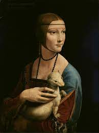
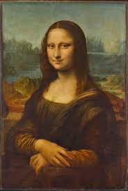

Museo del Prado

¿Como se llama?
La dama del armiño
¿Quien la pinto?
Leonardo da Vinci
¿Cuando se pinto?
En el año 1489
¿Quien esta pintado en el retrato?
Cecilia Gallerani, retratada cuando era la amante de Ludovico Sforza
La pintura fue adquirida a finales del siglo xviii por el príncipe Adam Jerzy Czartoryski y desde entonces ha permanecido
en posesión de esa familia, que desde 1876 lo exponía en el Museo Czartoryski de Cracovia (Polonia).
Desde diciembre de 2016 la obra es propiedad del gobierno polaco, tras su adquisición a los herederos de la familia Czartoryski.

¿Como se llama?
La joven de la perla
¿Quien la pinto?
Johannes Vermeer
¿Cuando se pinto?
Entre 1665 y 1667
Recientes escritos sobre Vermeer apuntan a que la imagen era un tronie, nombre que se daba en Holanda en el siglo XVII
a las efigies peculiares o expresivas, de uso decorativo, que no tenían intención de ser un retrato identificable y que en
muchos casos los pintores producían para demostrar su pericia.

¿Como se llama?
La Gioconda o Monna Lisa
¿Quien la pinto?
Leonardo da Vinci
¿Cuando se pinto?
En el año 1503
¿Quien esta pintado en el retrato?
Lisa Gherardini, esposa de Francesco del Giocondo
Obra pictórica del polímata renacentista italiano Leonardo da Vinci. Fue adquirida por el rey Francisco I de Francia
a comienzos del siglo XVI y desde entonces es propiedad del Estado francés.